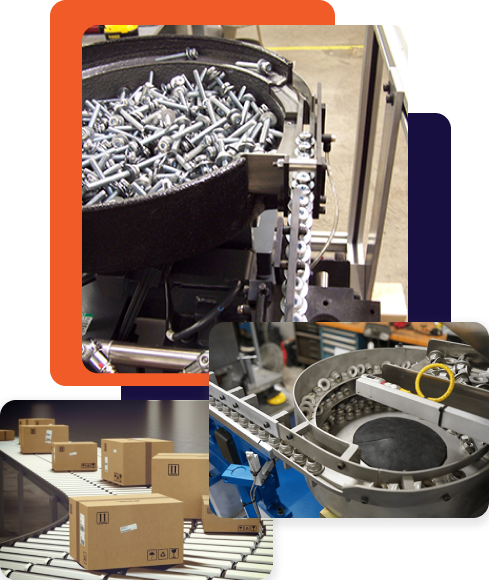
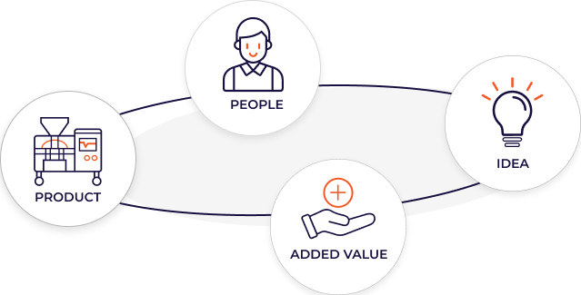

PT SETA Technology Asia berdiri sebagai mitra rekayasa otomasi tier-1 yang memadukan keahlian mekanik getar presisi tinggi dan computer vision optik untuk mengamankan kontinuitas produksi industri modern di Indonesia.

Dalam lini manufaktur modern, penghentian produksi akibat part tersangkut (*jamming*) atau komponen cacat yang lolos ke tahap perakitan dapat menimbulkan kerugian operasional yang masif. PT SETA Technology Asia hadir untuk menyelesaikan akar permasalahan tersebut.
Dengan portofolio produk mencakup Vibratory Bowl Feeder, Centrifugal Feeder, Track Linier, hingga Automatic Optical Sorter, kami merekayasa setiap jalur mangkuk getar secara kustom berdasarkan koefisien gesek dan titik berat part pelanggan.
Pabrikasi mangkuk SUS304 dengan mesin CNC presisi untuk menjamin toleransi orientasi part hingga ±0.05 mm.
Integrasi kamera inspeksi optik berkecepatan tinggi untuk mendeteksi cacat mikro tanpa memperlambat ritme produksi.
Perancangan mematuhi regulasi CE Machinery Directive dengan enclosure peredam kebisingan di bawah 70 dB(A).
Tim teknis berpengalaman yang siap terjun langsung ke plant Anda untuk kalibrasi berkala dan optimasi feeding rate.
Keberlanjutan operasional PT SETA didukung oleh kepercayaan industri lintas sektor: otomotif tier-1 & tier-2, semikonduktor, elektronika presisi, farmasi higienis, pengemasan makanan, hingga perakitan alat berat.
Diversifikasi ini membuktikan kapabilitas adaptasi rekayasa kami terhadap standar kebersihan Cleanroom SUS316L maupun ketahanan aus berat industri stamping logam.
